An introduction to the computation of Spectral Submanifolds
Contents
First order mechanical systems
We consider dynamical systems of the form
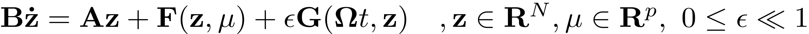
Any first order ODE with smooth right hand side can be brought to this standard form around its fixed points. After an initial translation to set a fixed point to the origin of the coordinate system, the right hand side can be expanded as a Taylor series which yields the desired form. Here 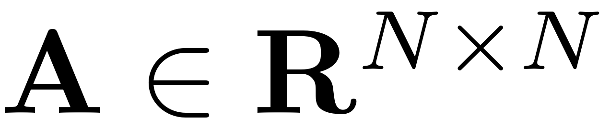 is the linear part of the dynamical system. Throughout the dynamical systems literature the matrix 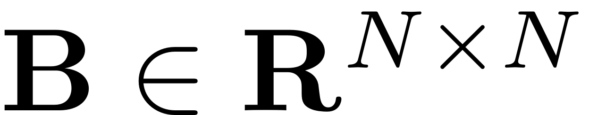 is often taken to be the identity. We do not make this assumption and treat the general case, which leads to computational advantages for dynamical systems that stem from second order ODEs as the inversion of possibly large system matrices can be avoided this way.  is a vector valued nonlinear function and assumed to be
is a vector valued nonlinear function and assumed to be  -times continuously differentiable in and a set of parameters 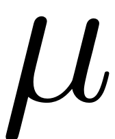. is a non-autonomous and possibly non-linear function which contains the time-dependent forcing that is acting on the system.
-times continuously differentiable in and a set of parameters 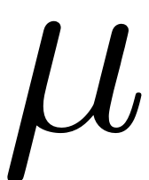. is a non-autonomous and possibly non-linear function which contains the time-dependent forcing that is acting on the system.
Second order mechanical systems
Invariant manifolds such as SSMs can also be computed in the phase space of second order mechanical systems. These look as follows
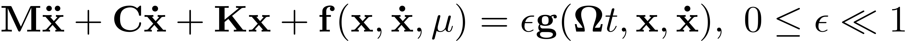
The linear part of the system is characterised by 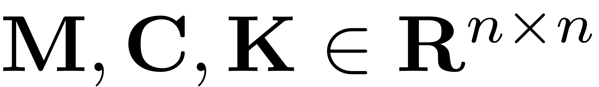 which denote the mass, damping and stiffness matrices, respectively. The function 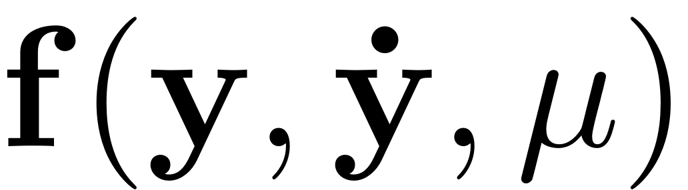 is a nonlinear function that is times continuously differentiable with 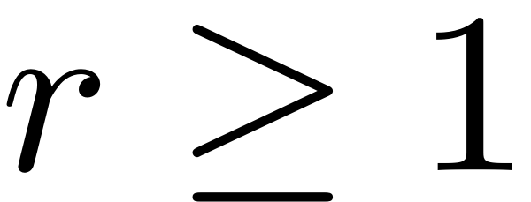.The distinct types of time-dependent forces are represented by general forcing vector . The second order form can be rewritten to the first order form, for instance by choosing
![$$\mathbf{z} = \left[ \begin{array}{c} \mathbf{x} \\ \dot{\mathbf{x}} \end{array}
\right], \quad \mathbf{A} = \left[ \begin{array}{c} -\mathbf{K} \quad \mathbf{0}
\\ \mathbf{0} \quad \mathbf{M} \end{array} \right], \quad \mathbf{B} = \left[ \begin{array}{c}
\mathbf{C} \quad \mathbf{M} \\ \mathbf{M} \quad \mathbf{0} \end{array} \right], \quad
\mathbf{ F(z)} = \left[ \begin{array}{c}- \mathbf{f(x,\dot{x})} \\ \mathbf{0}
\end{array} \right], \quad \mathbf{ G}(\mathbf\Omega t, \mathbf{z}) = \left[
\begin{array} {c} \mathbf{g}(\mathbf\Omega t,\mathbf{x},\mathbf{\dot{x}}) \\
\mathbf{0}\end{array}\right]$$](SSM_Computation_eq06462748947804439120-Rescaled.png)
This choice to obtain the first-order form is not unique (cf. Jain & Haller, 2021) but all such forms can be used for the computation of SSMs. No assumption has to be made about the magnitude of the nonlinearities as the results presented here are valid for nonlinearities of any magnitude, the curvature of the computed manifolds depends smoothly on the magnitude of the nonlinearities.
Parametrisation of SSM and reduced dynamics
To compute the parametrisation of the SSM and the reduced dynamics on it they are expanded as Taylor series. In an initial step, they are expanded in the forcing amplitude, which allows to separate autonomous and non-autonomuos contributions:


where 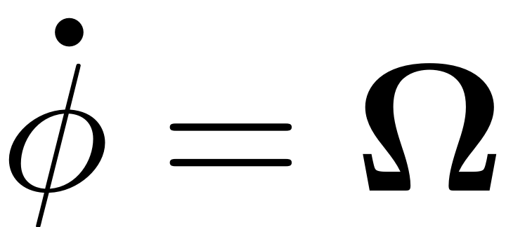 Consequently the individual functions are also expanded in the parametrisation coordinates . For the autonomous functions this reads
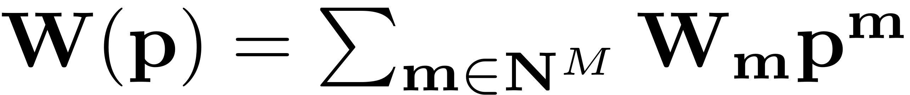
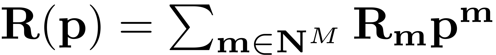
Here we have made use of the multi-index notation, which leads to an efficient computational routine and easy handling of the terms (cf. Thurnher, Haller & Jain, 2023). Using a multi-index  a monomial in parametrisation space can be written in a unique way, as 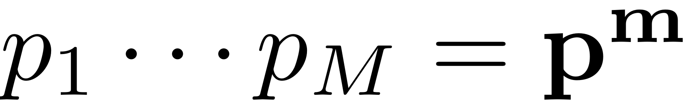. As the non-autonomous parametrisation and reduced dynamics coefficients depend on time, they are expanded in a Fourier series, which yields an expression for the non-autonomous functions given in terms of a Taylor-Fourier expansion:
a monomial in parametrisation space can be written in a unique way, as 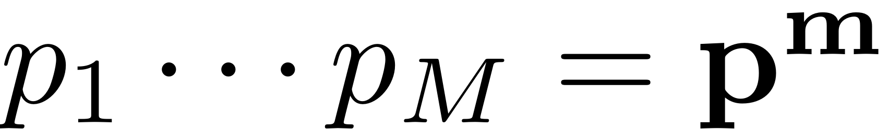. As the non-autonomous parametrisation and reduced dynamics coefficients depend on time, they are expanded in a Fourier series, which yields an expression for the non-autonomous functions given in terms of a Taylor-Fourier expansion:
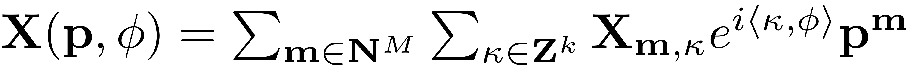
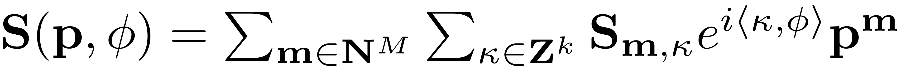
For an account of how the coefficients of the nonlinear functions used in these expansions are used, please refer to the following figure:
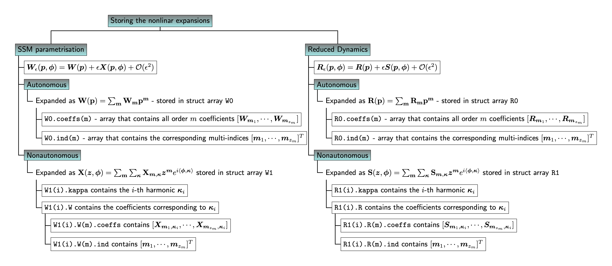
Existence and computation of SSMs
In order to check, whether the SSM (we refer to it as S) that one is about to compute really exists, the Manifold class automatically performs a resonance analysis when the modes are chosen with
S.choose_E(masterModes) %automatically performs resonance analysis
Consequently, the information about resonances between the master spectral subspace and the remaining system modes that have been computed, gets stored in the SSM object. If a manifold computation is consequently attempted, the system will prompt information about relevant resonances which might affect the existence of the manifold. More information about this is given in Spectrum and Resonances and Theory of SSMs.
Computation of the autonomous SSM
Now that the existence of the SSM has been established we move to the computation of the automomous SSM parametrisation 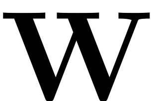 and the reduced dynamics 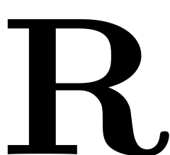. The following figure (cf. Jain & Haller, 2021) depicts, how such an SSM maps the 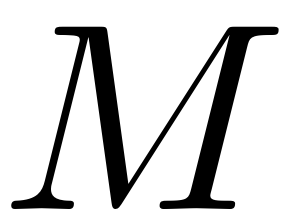 parametrisation coordinates onto a - dimensional manifold 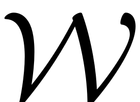 in full phase space. This manifold is tangent to the master spectral subspace 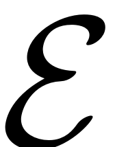. The reduced dynamics on the SSM are represented by and constitute an exact ROM for the full system. Due to the invariance, any trajectory of the reduced dynamics in the parametrisation space is mapped onto a trajectory on on the full phase space. For an explanation on the underlying theory of the SSM and the reduced dynamics see Theory of SSMs. For more explanations on the choice and importance of refer to Spectrum and Resonances.
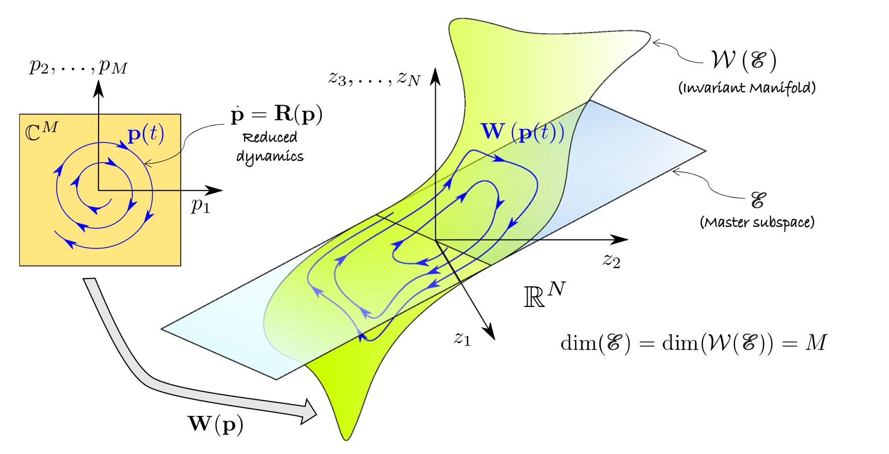
The autonomous contributions to the invariance equation (see SSM-Theory) are collected which yields the autonomous invariance equation
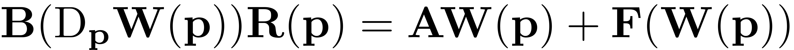
Consequently the expansions for the SSM-parametrisation and the reduced dynamics are plugged in. As multi-variate monomials are linearly independent and form a basis in their functional space, the invariance equation decouples for each multi-index (recall that each multi-index corresponds to a unique monomial). The cohomological equation for a multi-index reads
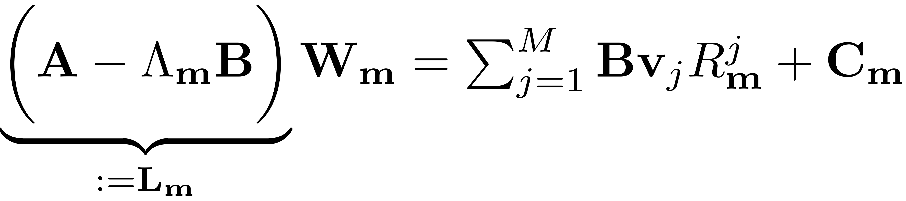
Here we have defined 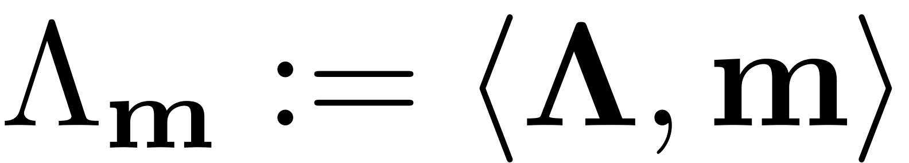. As this equation is underdetermined ( 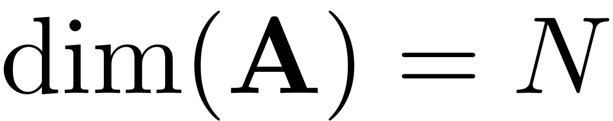 and the number of unknowns is 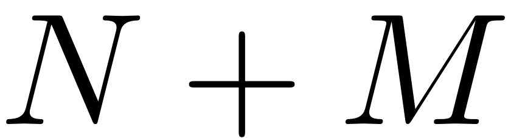, due to the reduced dynamics coefficients ) we have the freedom to choose different styles of the parametrisation. For a normal form parametrisation, the reduced dynamics coefficients are set non-zero only in the case a resonance occurs. In this case the condition
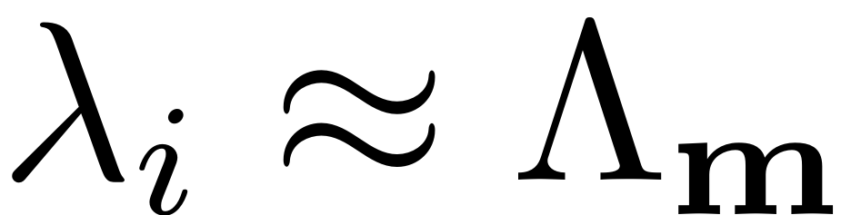
makes the coefficient matrix 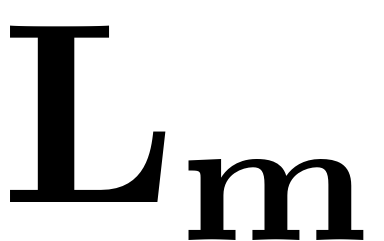 nearly singular. The reduced dynamcis are then chosen to lift this singularity and render the equation solvable, by choosing
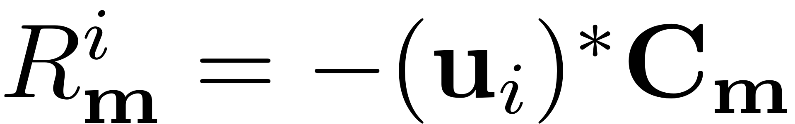
For more details refer to Spectrum and Resonances or to the following publications: Jain & Haller, 2021. and Thurnher, Haller & Jain, 2023.
To compute an approximation to the SSM with SSMTool up to order order one can simply call
[W,R]=S.compute_whisker(order);
which automatically solves the cohomological equations up to a desired order.
Computation of the non-autonomous SSM
In the case of a non-autonomous dynamical system, the computation of the non-autonomous parametrisation 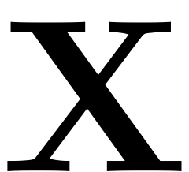 and the non-autonomous contributions of the reduced dynamics 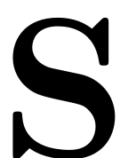 may be necessary. The non-autonomous, order 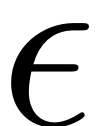 contribution to the invariance equation reads
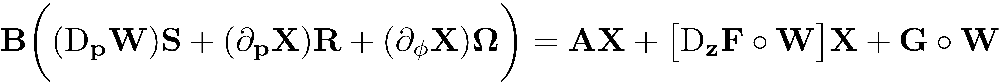
The leading order terms in lead to an oscillation of the base to which the autonomous manifold is attached, while higher order terms account for the (quasi-) periodic deformation of the manifold itself. Note, that the non-autonomous effects are of magnitude and thus in many cases (in particular if only direct external excitation resonant to a single mode is present) this term can be neglected.
Leading order approximation
In such a case only a leading order approximation of the non-autonomous reduced dynamics is computed. The higher order non-autonomous terms of the manifold are ignored. The following parameter may be set, to omit higher order non-autonomous terms.
set(S.Options,'contribNonAuto',false)
As the ROM and SSM-coefficients are then independent of the forcing frequency, the invariance equation only has to be solved once - this leads to a fast computational routine. The leading order invariance equation is given as
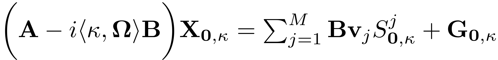
The ROM now reads
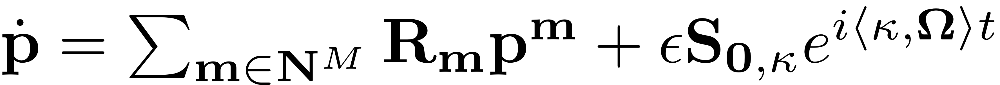
where the non-autonomous coefficient has been chosen as 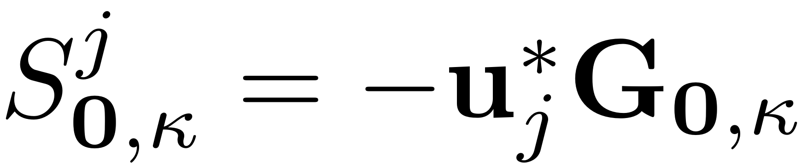 (note that the normalisation of the linear modes is 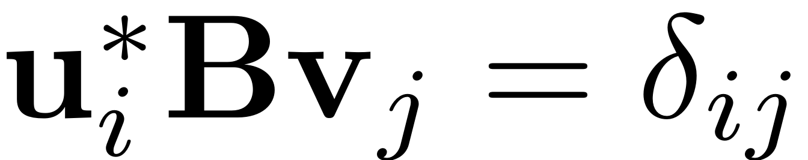 ) to lift the direct resonance
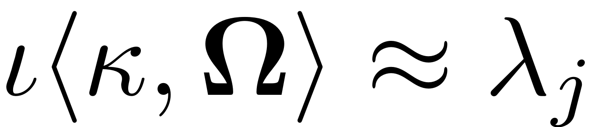
Higher order approximation
If more complex resonances or physical effects such as parametric excitation, subharmonic resonances or a more accurate computation is desired, then the non-autonomous terms have to be added to the expansion. Higher order terms of the expansion are included by setting
set(S.Options,'contribNonAuto',true)
The non-autonomous invariance equation for higher order terms reads
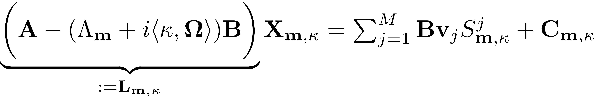
Again, 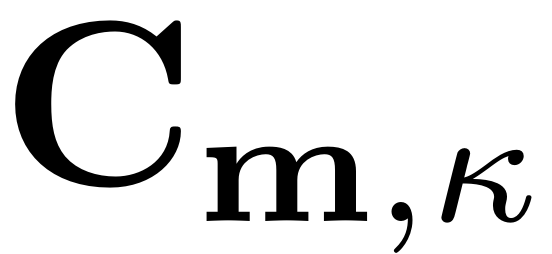 collects known terms corresponding to lower order expansions, the nonlinear internal forces and the time-dependent forces. The reduced dynamics are chosen to lift the singularity due to resonances of the form
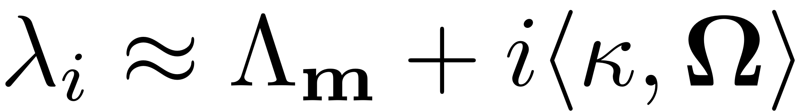
and are set as
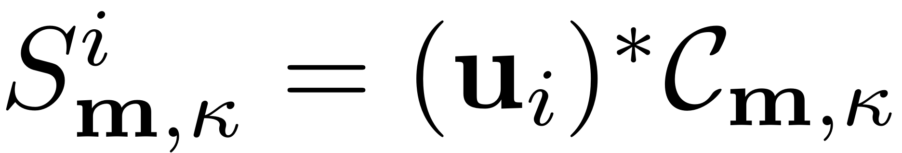
Details on the computational procedure are given in Thurnher, Haller & Jain, 2023. The non-autonomous terms can be computed by calling
S.compute_perturbed_whisker(order,W0,R0,Omega)
Note that for this, W0 and R0 need to be provided up to order+1, due to the structure of the non-autonomous equations, and the forcing frequency corresponds to the frequency at which the non-autonomous terms should be computed. In the following figure (cf. Jain & Haller, 2021), the parametrisation of such a non-autonomous SSM and the reduced dynamics on it are visualised schematically. The parametrisation space (yellow) consists of a direct product of 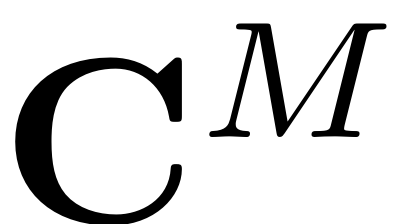, which contains the spacial parametrisation coordinates, with the 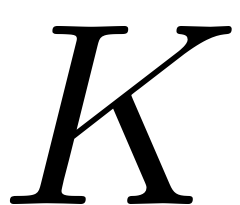 - dimensional torus 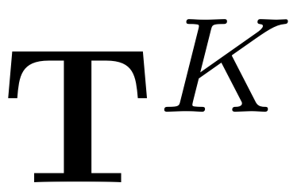, which includes the temporal variables. The parametrisation 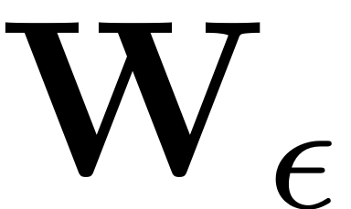 then maps this direct product onto the invariant, non-autonomous manifold (blue) in the full, non-autonomous phase space. The spatial euclidian coordinates of this phase space are represented with a gray rectangle. The master subspace is displayed in green. The temporal evolution of the manifold parametrisation implies that, as time passes, the SSM stays tangent to the subbundle  . The SSM furthermore deformes in a quasiperiodic manner, according to the frequencies and harmonics present in the external excitation.
. The SSM furthermore deformes in a quasiperiodic manner, according to the frequencies and harmonics present in the external excitation.
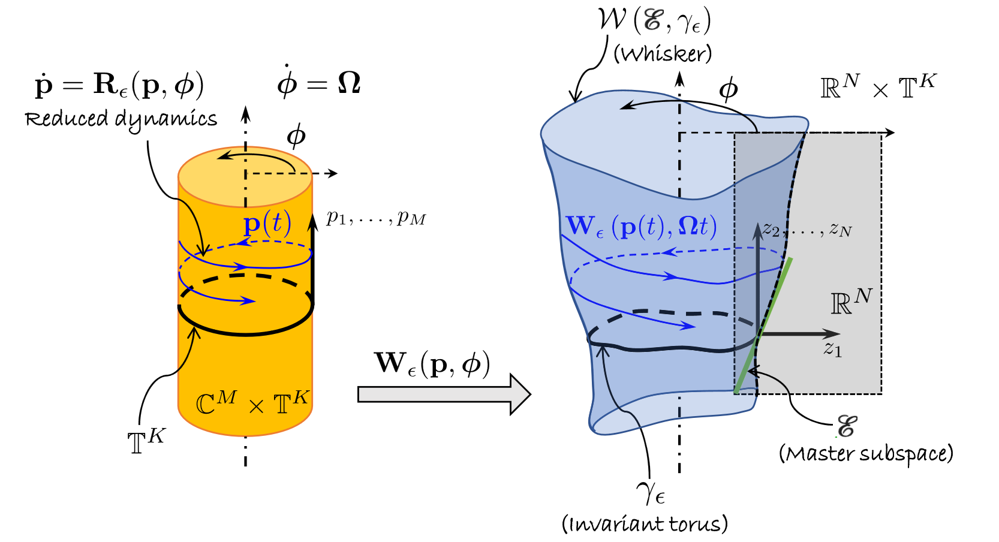